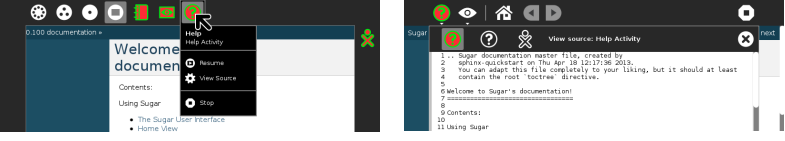
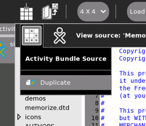
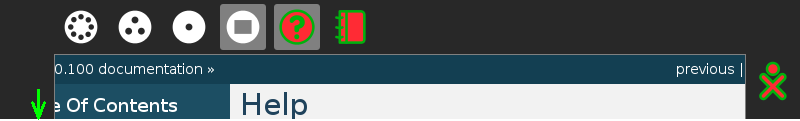
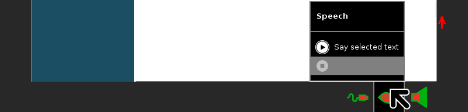

Sugar Features¶
This page presents a number of Sugar features common to many Activities. .. _View source:
View source¶
You always can view the source code of Sugar Activities. In most cases, View Source will show you the Python code of the activity, in other cases, like Browse, you can see the HTML code of the page seen in the activity.
You can see the source window by pressing Fn-space on your XO, or Alt-Shift-V, or right click on the Activity’s icon in The Frame. Here is an example of viewing the source of a page in Help Activity. In the case of this activity, you see the simple text, which Help converts into HTML pages for display. This is useful in the process of editing Help pages as described in How to edit Help and contribute.

Duplicating activities¶
In the source window is an option to duplicate an activity. By selecting this option, a copy of the activity is created in the user’s $HOME/Activities directory. Thus we hope to encourage Sugar users to make modifications and improvements to the code they use without the risk of breaking the original activity.

 For more information:
For more information:
The Sugarlabs.org wiki has a informative article: http://wiki.sugarlabs.org/go/View_Source
Say selected text¶

You can have Speak, or robot Alice, read aloud, selected text. Here we demonstrate Alice reading text framed by Help. In Help, for instance, you can select a whole page of text, and have it read aloud to you while you explore that Activity.
Try it now, Select the text in this frame.
To select text, move the mouse to the top left of the text, there is a green arrow near the correct point. Click the left, or main, mouse button. Move the cursor to the bottom right of the text to select, there is a red arrow near the correct point.
Bring in the The Frame with the “Frame key” or F6. Press on the “Speech lips” icon in the bottom of the frame, then press on Say selected text. Notice also that there is a pause feature, once speech has started.

The Say selected text feature is available in many text based Activities including Browse, FotoToon, Write. Look out for the “Speech lips” icon in the bottom of the Frame, or as a button in the toolbar of an Activity, as in Write.
Note
This is a new unfinished page, you can modify it yourself following guidance here How to edit Help and contribute